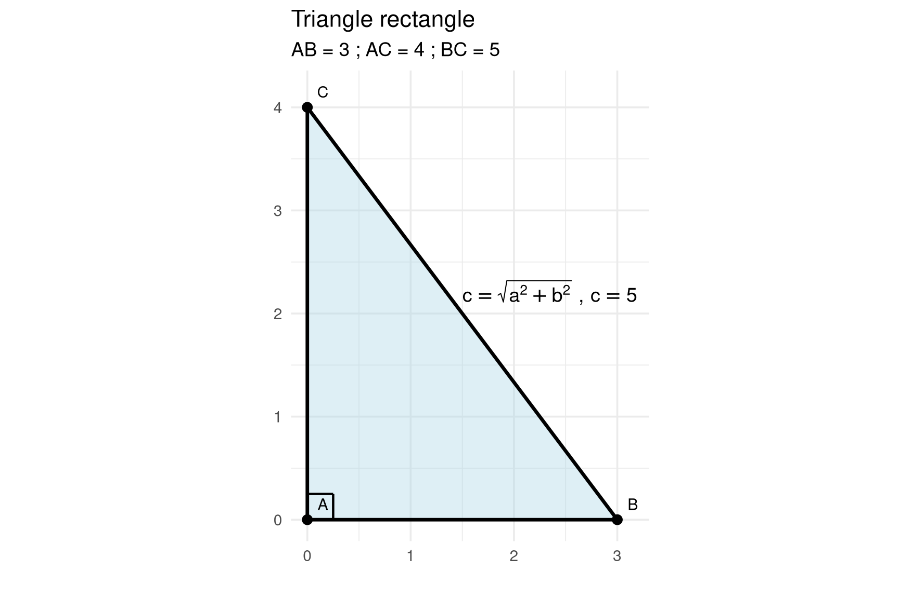

Dans un triangle rectangle, l’hypoténuse est le côté opposé à l’angle droit.
L’hypoténuse est le plus grand côté du triangle rectangle.
Si un triangle est rectangle, alors le carré de la longueur de l’hypoténuse est égal à la somme des carrés des longueurs des deux autres côtés.
Avec les notations du triangle ABC rectangle en A, on a
\[ BC^2 = AB^2 + AC^2 \]
ou
\[ BC = \sqrt{AB^2 + AC^2} \]

hypo_fun <- function(a=3, b=4) {
sqrt(a^2 + b^2)
}
hypo_fun()## [1] 5hypo_fun(a = 8, b = 14)## [1] 16.12452hypo_fun(a = 70, b = 30)## [1] 76.15773